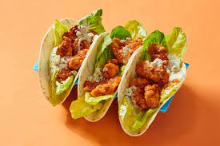

Chicken Taco

Delight in the tantalizing charm of a chicken taco, where succulent seasoned chicken meets the warmth of a
soft tortilla, creating a harmonious blend of flavors that dances on your taste buds.
Ingredients
- Boneless, skinless chicken breasts or thighs
- Taco seasoning (store-bought or homemade)
- Soft taco tortillas
- Toppings of your choice (shredded lettuce, diced tomatoes, shredded cheese, salsa, sour cream, etc.)
Instructions
- Season the chicken with taco seasoning, ensuring it's well coated.
- Heat a skillet over medium-high heat.
- Add the seasoned chicken to the skillet and cook for 6-8 minutes per side or until fully cooked and juices
run clear.
- Remove the chicken from the skillet and let it rest for a few minutes before slicing it into thin strips.
- Warm the soft taco tortillas according to the package instructions or heat them on the skillet for a few
seconds on each side.
- Assemble your tacos by placing the sliced chicken on the tortillas.
- Add your favorite toppings, such as shredded lettuce, diced tomatoes, shredded cheese, salsa, and sour
cream.